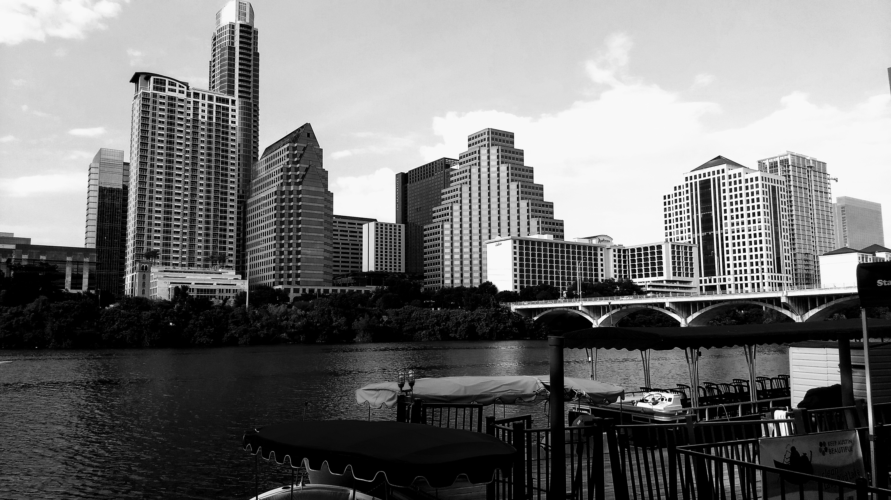
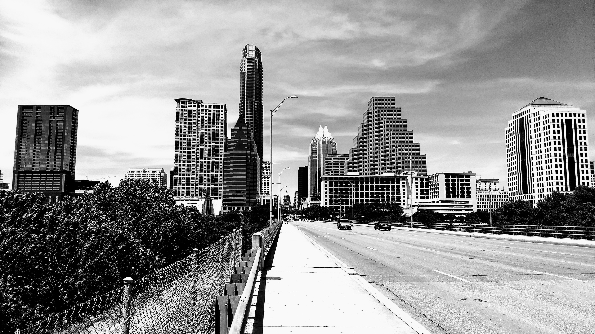
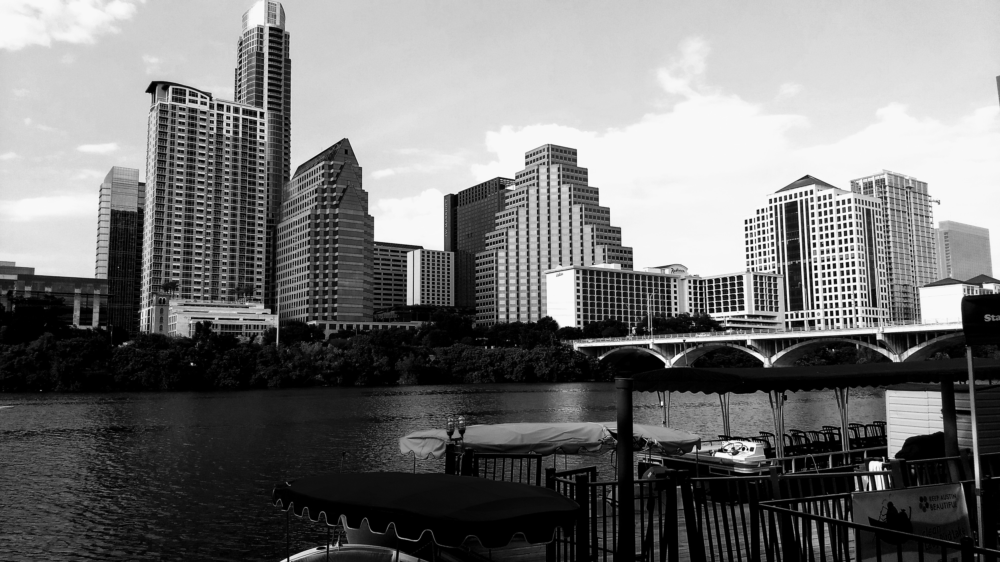
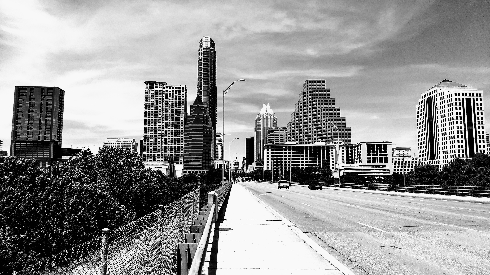
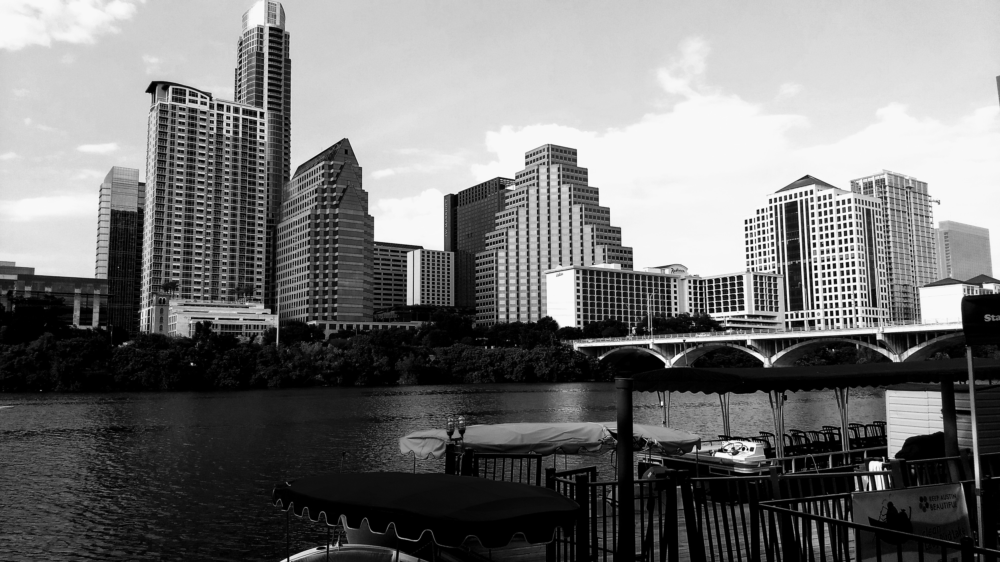
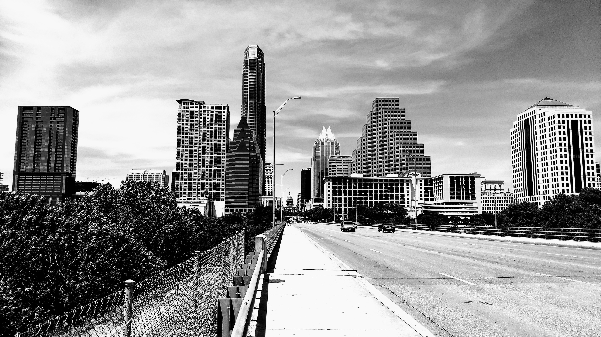
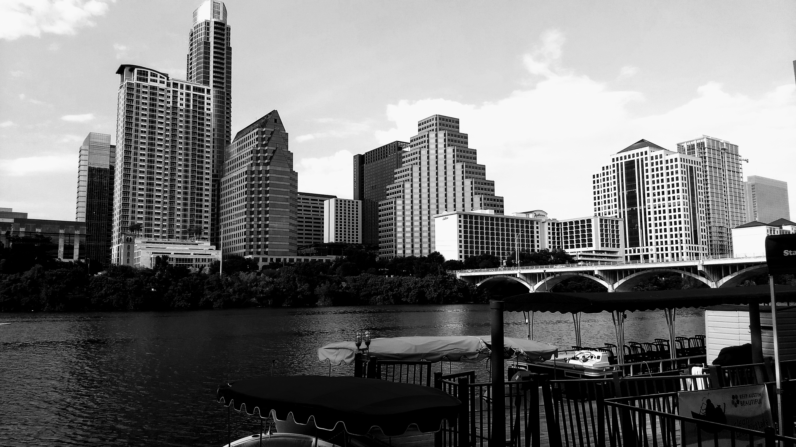
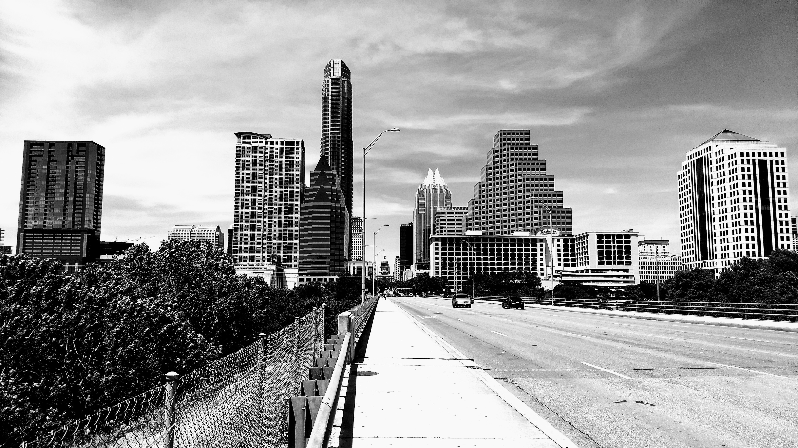

Welcome to my professional portfolio page. Here, you will find links to my work done in the UT Data Analytics Bootcamp Program in 2017-2018.
Click on the thumbnail image below to download a copy of my resume
⇓

Created by Peter Hoessel in ATX, 2018